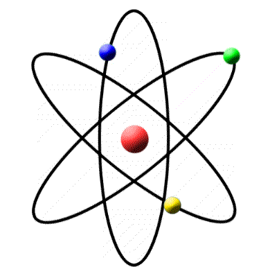

It is the smallest constituent unit of matter that possess the properties of the chemical element. Atoms don’t exist independently, instead, they form ions and molecules which further combine in large numbers to form matter that we see, feel and touch.
Atoms are much too small to be seen; hence experiments to find out their structure and behavior have to be conducted with large numbers of them. From the results of these experiments we may attempt to construct a hypothetical model of an atom that behaves like the true atom.
The size of an atom is extremely small, much smaller than our imagination. A layer of an atom as thick as a thin sheet of paper is formed when more than millions of atoms are stacked together. It is impossible to measure the size of an isolated atom because it’s difficult to locate the positions of electrons surrounding the nucleus.
However, the size of an atom can be estimated by assuming that the distance between adjacent atoms is equal to half the radius of an atom. Atomic radius is generally measured in nanometres.
An atom is composed of three particles, namely, neutrons, protons and electrons with hydrogen as an exception without neutrons.
The protons and neutrons are packed together into the center of the atom (which is called the nucleus) and the much smaller electrons, whizzing around the outside. When people draw images of atoms they show the electrons like satellites spinning in orbits around the Earth.